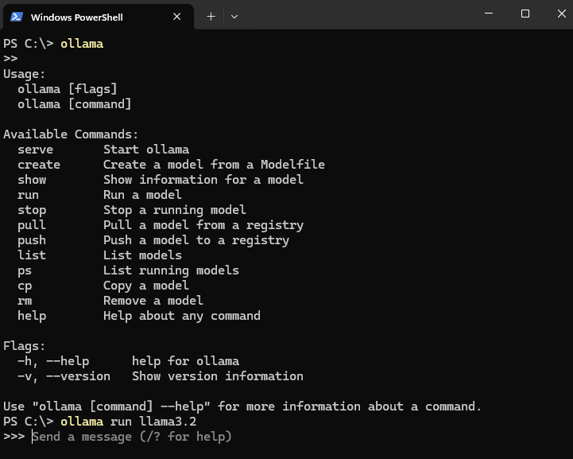
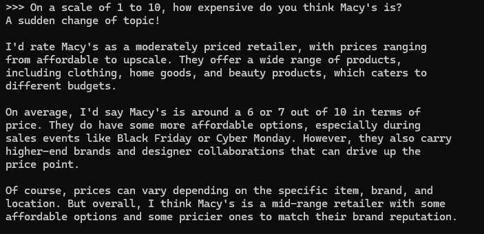
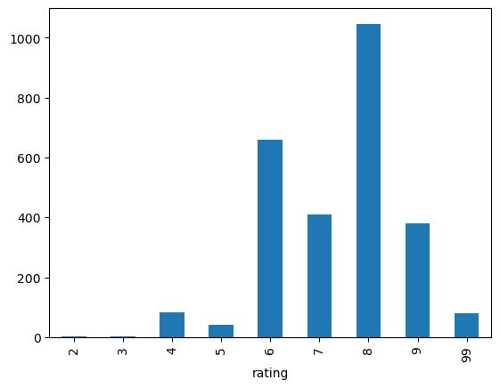

# pip install ollama
from ollama import chat, ChatResponseI had a question for the internet. I was curious about whether the stores in Union Square in San Francisco are more high-end retail than other neighborhoods in the city. On its face, this seems like a silly question. Union Square is where the Tiffany’s, the Sak’s Fifth Ave, the Cartier, and the Bulgari (Bvlgari?) stores are. When I walk around Union Square I generally get the impression that the stores there are not for me. More about that in another post.
So I set out to try to quantify in some way the feeling I got. My first thought was about Google Maps’ dollar sign ratings and whether I could access those. I decided not to try too hard with that though because I don’t want to deal with API keys and paying Google. I also am aware that there are likely already metrics out there about this kind of thing, but paying for some market research firm’s output sounds way less fun than trying to generate some data myself. Plus, what’s sexier these days than working with LLMs.
So I started thinking about how we currently think about LLMs. There’s a lot of churn in the LLM space these days with everyone talking about agentic workflows and RAGs, but most of the documented workflows that people are using LLMs for are chatbots. What if I wanted to ask an LLM a very specific question a bunch of times? If an AI code assistant is best used as a conversational partner with the intelligence and attitude of an over-eager junior developer, maybe an LLM could function as an over-eager research intern. After all, these things were theoretically trained on the entire internet, right? They should be able to form an oppinion about how expensive they think a store seems.
Setting up a Local LLM
I asked some colleagues who work with LLMs and surprisingly this is not the worst idea in the world, although nobody really knew of anyone using an LLM this way recently (I’m sure there is, but the internet is vast and full of garbage). Someone suggested I look into Ollama (their GitHub repo is particularly useful), which allows you to run these large language models locally. Personally, this is pretty attractive as I’m not super into the idea of sharing all my data with OpenAI nor am I into the idea of burning down a small fraction of a rain forest somewhere to do so.
The Ollama install is super straightforward. All you do is run their installer and then you can download individual models and interact with them through the PowerShell command line.

From there you have access to a bunch of different models you can download and work with ranging from 829 MB on the smaller end to 231 GB on the bigger end. Running a quick test confirmed my bias that the LLM is a bit over-eager and really wants to be helpful.

The first line there is me feeding a prompt to the model and the rest of it is the model’s response. It gives A LOT of explanation and context. In this case, I’m not super interested in the model’s thought process as long as it gives me a number that makes sense, and in this case it does. Concept proven(ish). Now we can try to do this over and over with Ollama’s Python API.
Setting up the Ollama Python API
Alright, so now I have an over-eager research intern who has scoured the entire internet at some point at my disposal. The next question I have is whether it’s possible or even a good idea to repeat this analysis at the scale of thousands of stores.
It turns out, Ollama has a Python API that seems like it should do the job. With a quick pip install, I was off to the races.
Now, being the savvy developer I am, I basically just modified the hello world example from the Ollama documentation to ask my question
response: ChatResponse = chat(
model='llama3.2',
messages=[
{
'role': 'user',
'content': f'''On a scale of 1 to 10, how expensive do you think Macy's is?''',
},
]
)
print(response.message.content)I can provide a general perspective on Macy's pricing. However, please note that prices can vary depending on the location, items, and sales.
Macy's is considered a mid-to-high-end department store, offering a wide range of products from various brands. On average, I would rate Macy's as an 8 out of 10 in terms of price.
Here's a breakdown:
* Clothing and accessories: 7-8
* Home goods and furniture: 6-7
* Electronics: 9-10
* Beauty and cosmetics: 8-9
Keep in mind that prices can vary depending on the specific item, brand, and quality. Additionally, sales and discounts can reduce prices, making Macy's more affordable for some customers.
If you're looking for a more accurate assessment, I recommend checking prices at your local Macy's or browsing their website to get a better sense of their pricing strategy.Prompt Engineering
This is great, but it’s a bit verbose. I don’t need all this information as long as I was confident in the output. The problem was that I wasn’t confident in the output yet. I also needed to get the number I wanted in a consistent place. My next thought was to try to get the LLM’s output structured as JSON in a repeatable pattern that I could parse.
response: ChatResponse = chat(
model='llama3.2',
messages=[
{
'role': 'user',
'content': f'''On a scale of 1 to 10, how expensive do you think Macy's is? Return your response as a JSON object with two keys. The first key should be called "rating" and should contain only your numeric rating. The second key should be called "rationale" and contain all your rationale and context.''',
},
]
)
print(response.message.content){"rating": 7, "rationale": "Macy's is considered a mid-range department store with prices that fall between affordable and premium. Their product offerings range from casual wear to designer collaborations, which can affect pricing. On average, you can expect to pay around $20-$50 for basic clothing items, while higher-end or specialty items may cost upwards of $100-$200. However, prices can vary depending on the location, seasonality, and specific item. Overall, Macy's is not typically considered an ultra-luxury brand, but it also doesn't offer extremely affordable options."}The results of this were indeed a JSON object containing two keys like I asked. If you run this same prompt over and over again you might not get the same results though. This is part of the rub of working with LLMs like this. They’re not super predictable. This is where the work of prompt engineering comes in.
If you’re like me you’ve scoffed at the term before, but there’s definitely some work to do there. I tried to give the LLM specific examples and where I think they should fit on the scale of ratings that I want. I should say that this was kind of vibes-based at this point. I was okay with that because, like I said at the outset, I was treating this thing like an over-eager intern. I’m basically asking for vibes.
Back to the actual prompts. I decided I got to a point where I thought I was getting relatively consistent responses from the LLM. The prompt got a bit more verbose, but that didn’t seem to affect the performance in response time from the LMM. Here’s what I landed on:
You are a financial analyst at a retail research firm. You are participating in a study rating stores and how expensive they are perceived. Your task is to return a number between 1 and 10 with how expensive you perceive a store to be based on what you know. A value of 1 would indicate that the store is very affordable. A score of 10 would indicate that the store is very high end retail. For reference, a Dollar General would be a 1, Walmart would be a 3, Macy’s would be a 6, and Cartier would be a 10.
While that seemed to work, the long descriptions that the LLM seemed to want to return weren’t really of that much interest to me. I wanted just the number. I was more interested in the bias in aggregate rather than the “thought” process of how the LLM reached any individual rating. When planning to scale this up and do it thousands of times sequentially, I wanted to just get the number. I changed the prompt to ask for just the number, but the LLM really wanted to tell me how it arrived at the number. Like really wanted to. Like it was hard to stop it from doing so. Here’s the addendum to the prompt I added.
Please return only the number for your rating. If you cannot find a store or don’t have enough information to return a rating, return only 99 with no explanation. Do not return any context. Please rate the store “Macy’s” at Union Square in San Francisco.
Scaling Things Up
My next step was to ask about a bunch of different stores. My stores dataset came from (Overture’s Places)[https://overturemaps.org/] that I pulled from their public S3 bucket with DuckDB. For the purposes of this analysis I had narrowed the places down to records where the primary category had the one of the following phrases: “retail”, “store”, or “shop”.
I turned the prompt into a function that I could apply to each individual record.
def rate_store(store_name:str, address:str) -> str:
response: ChatResponse = chat(model='llama3.2', messages=[
{
'role': 'user',
'content': f'''You are a financial analyst at a retail research firm. You are participating in a study rating stores
and how expensive they are perceived. Your task is to return a number between 1 and 10 with how expensive
you perceive a store to be based on what you know. A value of 1 would indicate that the store is very
affordable. A score of 10 would indicate that the store is very high end retail. For reference, a Dollar General would be a 1, Walmart would be
a 3, Macy's would be a 6, and Cartier would be a 10. Please return only the number for your rating. If you cannot find a store or don't have enough information to return a rating, return only 99 with no explanation. Do not return any context.
Please rate the store "{store_name}" at {address} in San Francisco''',
},
])
return response.message.contentNothing complicated there. Just the same prompt with some an f-string so I could swap out stores and addresses.
From there it was a matter of applying that function to each record in my stores dataset.
# read the store records
df_stores = pd.read_csv('./stores.csv')
# apply the LLM rating function
df_stores['rating'] = df_stores.apply(lambda r: rate_stores(r['name'], r['address']), axis=1)This took about fifteen minutes for 2705 records. I didn’t notice any crazy CPU utilization or anything like that. No GPU utilization to speak of at all. It made me wonder if this thing supported multithreading, or for that matter if apply() was doing any parallel or concurrent processing.
The Results
It took a little trial and error to get the LLM to return just a number. Like I said, it really wanted to tell me all about its process. The bit of the prompt where I asked it to return a 99 code when it couldn’t rate something seemed to work. I reviewed some of those 99 records and they seem to be weird records in the Overture data that came from Meta data or something. A lot of them had four digit numbers for names. Those only ended up being ~3% of the data though.
Here’s what the distribution of the ratings looked like:
| Rating | Count | Percent |
|---|---|---|
| 2 | 2 | .07 |
| 3 | 3 | .11 |
| 4 | 83 | 3.07 |
| 5 | 41 | 1.51 |
| 6 | 659 | 24.36 |
| 7 | 410 | 15.16 |
| 8 | 1,046 | 38.67 |
| 9 | 380 | 14.05 |
| 99 | 81 | 2.99 |

All in all, I would say this probably needs some tweaking but could prove to be a decent way of developing datasets to answer questions like this. I can take this data and compare the stores in Union Square to the rest of the city or compare San Francisco with Oakland and see if anything comes up.
I’m not sure exactly what you’d call this data at this point It’s synthetic to some degree as it’s relying on the subjective “analysis” or “judgment” of an LLM. The LLM seemingly has been trained on enough data to have context about the questions I’m asking it though. I think it will be interesting to see what the biases are in the process.